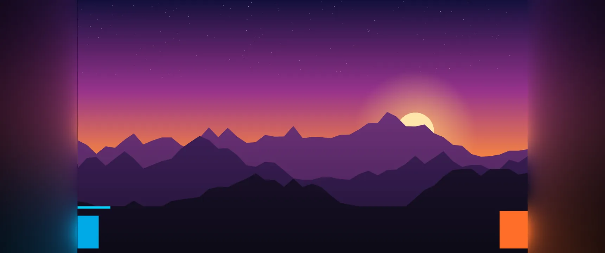
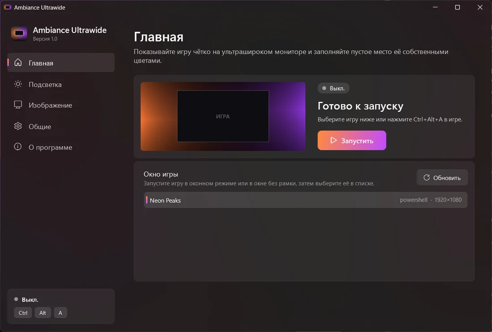
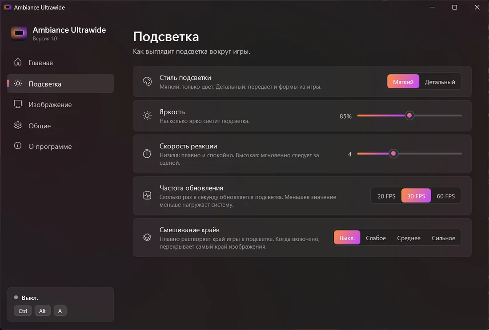

Ambiance Ultrawide
Чёткие игры. Фоновая подсветка. Для ультрашироких мониторов.
Чёткие игры без размытия на ультрашироких мониторах и фоновая подсветка из цветов самой игры. Без потери FPS, около 1% ЦП.
Бесплатно · Открытый код · Windows 10/11 · 12 языков

Игра остаётся чёткой, а пустое место светится её собственным светом
Прощай, размытое низкое разрешение
Слева: сниженное разрешение Windows. Справа: Ambiance Ultrawide.


Весь экран без потери FPS
Игра рисует те же пиксели, а Windows показывает их крупнее

Мягкий или детальный свет
Спокойное цветное свечение или свет с формами из игры

Выберите игру и нажмите «Запустить»
Или нажмите Ctrl+Alt+A в игре

Настройте свет по вкусу
Стиль, яркость, скорость реакции и частота обновления

Возможности
Захват через видеокарту, около 1% ЦП. Не трогает память игры.
- Подсветка из цветов вашей игры
- Чёткое изображение без размытия от низкого разрешения
- Убирает рамку окна, меняет размер и центрирует игру
- Заполнение экрана без потери FPS
- Захват через видеокарту, около 1% ЦП
- Стили подсветки: мягкий и детальный
- Настройки яркости, реакции и частоты обновления
- Не трогает память игры, не собирает данные
О программе
Если снизить разрешение Windows, чтобы играть в меньшем разрешении на ультрашироком мониторе, всё становится размытым. Ambiance Ultrawide решает эту проблему.
Приложение показывает игру в окне — пиксель в пиксель и без размытия — и заполняет пустое место по бокам фоновой подсветкой из цветов самой игры, как подсветка телевизора. Вместо чёрных полос вы видите мягкое свечение, которое передаёт атмосферу игры.
При желании Ambiance Ultrawide может увеличить изображение на весь экран с помощью экранной лупы Windows. Игра по-прежнему рисует то же число пикселей, поэтому FPS не снижается.
Ambiance Ultrawide очень лёгкое. Оно захватывает экран средствами видеокарты и почти не нагружает процессор. Оно никогда не трогает память и файлы ваших игр — только считывает то, что видно на экране. Не собирает данные и не подключается к интернету.
Как пользоваться: запустите игру в оконном режиме или в окне без рамки, выберите её в Ambiance Ultrawide и нажмите «Запустить». Или нажмите Ctrl+Alt+A в игре. Ctrl+Alt+Z включает и выключает увеличение.
Интерфейс на 12 языках. Бесплатно и с открытым исходным кодом.